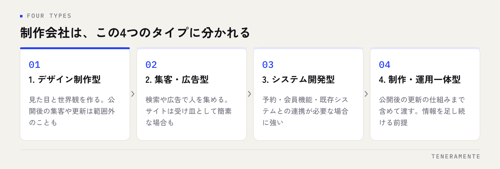

名古屋でホームページ制作を依頼しようとすると、制作会社の数が多く、どこを基準に比べればよいのか迷います。結論から申し上げると、比べるべきは価格ではなく、公開したあとに誰がサイトを更新できる形で引き渡されるかです。この一点が決まっていれば、見積もりの差がどこから来ているのかも読めるようになります。この記事では制作会社のタイプ分けから、見積もりの比べ方、契約前に聞く質問までを順に整理します。
📌 この記事の結論
ホームページ制作会社の選び方は、作る技術よりも「公開後」で分かれます。更新を自分たちでできる形か、毎回依頼する形かを先に決め、その前提で見積もりを出してもらってください。同じ条件を渡さずに集めた見積もりは、金額を並べても比較になりません。
01名古屋でホームページ制作を依頼する前に、目的を1文にする
制作会社を探し始める前に決めておくことが1つあります。そのサイトで何を起こしたいのか、という目的です。
「ホームページを新しくしたい」では、提案する側も方向が決められません。問い合わせを増やしたいのか、採用の応募を集めたいのか、既存のお客様に情報を届けたいのか、名刺代わりに会社の信頼を示したいのか。この4つは、必要なページも、文章の書き方も、公開後にやることも違います。
目的を1文にするときは、誰が、どこから来て、何をして帰るサイトなのかという形で書くと決まりやすくなります。「近所で店を探している人が、検索から来て、場所と営業時間を確かめて来店する」まで言えれば、提案の良し悪しを自分で判断できます。
逆に、目的が決まっていない状態で複数社に声をかけると、各社が得意な形の提案が返ってきます。デザインが得意な会社はデザインの提案を、広告が得意な会社は広告の提案を出します。どれも間違っていないのに比べられない、という状態になります。費用の全体像はホームページ制作費用の内訳にまとめています。
02制作会社は4つのタイプに分かれる
名古屋に限らず、制作会社は得意分野でタイプが分かれます。看板に書かれている業種はどこも「ホームページ制作」ですが、中身は別物です。

一つ目はデザイン制作型です。見た目と世界観を作ることが中心で、写真やロゴから整えてくれる会社もあります。ブランドを伝えたい場合に向きますが、公開後の集客や更新は範囲外になることがあります。
二つ目は集客・広告型です。検索やインターネット広告で人を集めることを軸に設計します。問い合わせを増やしたい目的と相性がよい一方、サイトそのものは広告の受け皿として簡素になる場合があります。
三つ目はシステム開発型です。予約、会員機能、既存システムとの連携など、仕組みが必要な場合に強みがあります。単純な会社案内だけなら、持っている力に対して費用が合わないこともあります。
四つ目は制作と運用の一体型です。作ったあとの更新の仕組みまで含めて渡す形で、公開後に情報を足し続ける前提の場合に向きます。タイプを見分けるには、実績として見せられたサイトが今も更新されているかを見てください。
03見積もりは同じ条件で出してもらう
見積もりの金額差は、腕の差よりも含まれている範囲の差から生まれます。比べるには、全社に同じ条件を渡すことが前提になります。
| 見積もりの項目 | 何に対しての費用か | 確かめること |
|---|---|---|
| 設計・打ち合わせ | 構成の設計、ページ構成の決定、打ち合わせの回数 | 回数に上限があるか。超えた場合の扱い |
| デザイン | トップと下層ページの見た目の制作 | 何画面分か。修正は何回までか |
| 文章・写真 | 原稿の執筆、撮影、素材の手配 | 自社で用意するのか、依頼に含まれるのか |
| 実装・公開 | 組み立て、スマートフォン対応、公開作業 | ページ数の上限。公開後の表示確認まで含むか |
| 更新の仕組み | 自分たちで更新するための管理画面 | 付くのか。どこまで自分で変えられるか |
| 月額 | サーバー、保守、更新代行、解析の確認 | 作業が含まれるのか、置いておく費用だけか |
このうち差が出やすいのは、文章・写真と、更新の仕組みの2つです。原稿を自社で用意する前提の見積もりは安く見えますが、実際には書く作業が社内に残ります。更新の仕組みが付かない見積もりは、公開後に文字を1行直すだけでも依頼と費用が発生します。
依頼する側から渡す条件は、目的、必要なページの一覧、公開したい時期、自社で用意できる素材、月額で払える上限の5つです。この5つを同じ文面で渡せば、返ってきた見積もりは横に並べられます。
04相談の前にそろえる材料
打ち合わせで話が進まない原因は、ほとんどが材料不足です。初回の相談までに、次の項目を文字にしておいてください。
- サイトの目的を1文で（誰が、どこから来て、何をして帰るか）
- 必要なページの一覧（まず思いつく範囲で。あとで増減してよい）
- 公開したい時期と、その理由（展示会、出店、採用の時期など）
- 現在のサイトで困っていること（更新できない、古い、スマートフォンで崩れる）
- 自社で用意できるもの（写真、ロゴ、会社案内、既存の原稿）
- 公開後に誰が更新するか（担当者名まで決める）
- 予算の上限と、月額で払える範囲
- 参考にしたいサイトを2〜3件と、どこがよいと思ったか
このうち最も効くのは、公開後に誰が更新するかを人の名前まで決めておくことです。担当者が決まっていないサイトは、どんな仕組みで作っても止まります。誰も手が空かないなら、更新の代行まで含めて相談する前提になります。リニューアルの判断時期についてはホームページのリニューアル時期も参考になります。
05公開後の運用まで任せられるかを確かめる質問
制作会社の違いが最も表れるのは、公開したあとの話をしたときです。次の質問は、どの会社にも同じ言葉で聞けます。
一つ目は「公開後、自分たちで変えられるのはどこまでですか」。文章と写真だけか、ページの追加までできるのか、構成は触れないのか。範囲が具体的に返ってくる相手は、引き渡しの形を考えて作っています。
二つ目は「更新を依頼した場合、どのくらいで反映されますか」。急ぎの修正が何日かかるかは、営業時間中に店の情報を直せるかどうかに直結します。
三つ目は「月額には、どの作業が含まれますか」。サーバーを置いておく費用だけなのか、更新の作業、表示の確認、検索順位の報告まで含むのか。含まれない作業の料金表も同時にもらってください。
四つ目は「ドメインとサーバーの契約は、どちらの名義になりますか」。自社名義であれば、あとで別の会社に移ることができます。制作会社の名義のままだと、移るときに交渉が必要になります。
五つ目は「契約が終わったあと、何が残りますか」。原稿、画像、サイトのデータ、解析の設定。残る範囲を先に文字で確かめておけば、将来の選択肢が狭まりません。
06地域で選ぶことに意味があるのは、どの部分か
名古屋で探す方からよく聞かれるのが、近くの会社に頼む意味はあるのかという点です。作業そのものは離れていてもできますが、距離が効く部分と効かない部分があります。
距離が効くのは、現場を見てもらう必要がある場合です。店舗や工場、施設のサイトは、写真の撮影や、現場の空気を文章に落とす作業が中身を左右します。打ち合わせのたびに移動の調整が要らないことも、公開までの速さに影響します。
もう一つは、地域の検索に関わる場合です。近隣から探される業種では、地図の検索やその地域の言い回しを前提に設計する必要があります。その土地の人の動き方を知っている相手は、ページの構成を説明するときの前提が合いやすくなります。
一方で、距離が効かない部分もあります。デザインや実装の技術、公開後の更新の仕組み、検索の設計は、どこにいても同じように提供できます。ですから近いことを理由に選ぶのではなく、タイプと公開後の形で絞ったうえで、現場に来てもらえるかを加点要素にするという順番が自然です。
07よくある失敗と、その避け方
相見積もりで総額だけを並べる。含まれる範囲が違えば、金額は比べられません。同じ条件を同じ文面で渡し、項目ごとに比べてください。
目的を決めずに制作会社に相談する。目的が無いと、各社の得意な提案が返ってきます。先に1文を書いてから声をかけてください。
公開後の更新担当を決めないまま進める。担当が居ないサイトは必ず止まります。人の名前を決めるか、代行を含めて契約してください。
デザインだけを見て決める。実績のサイトは公開直後の姿です。今も更新されているかを見ると、運用まで付き合う会社かどうかが分かります。
ドメインとサーバーの名義を確かめない。名義が制作会社のままだと、移るときに時間がかかります。契約前に自社名義にできるか聞いてください。
原稿を自社で書く前提に気づかない。文章は制作で最も時間のかかる部分です。誰が書くのかを見積もりの時点で確定させてください。
安い月額に作業が含まれていない。置いておくだけの月額と、更新を含む月額は別物です。含まれない作業の料金表も先にもらってください。
08自分で進める場合と、専門家に任せる場合の分かれ目
一般論として、判断の基準は3つあります。
一つ目は、サイトに担わせる役割の重さです。会社の存在を示すだけなら、既製のサービスを使って自分たちで作る選択も現実的です。問い合わせや採用の応募を取りに行くサイトは、どこに何を置くかの設計が結果を左右します。設計の経験がある相手と進めるほうが、やり直しが減ります。
二つ目は、文章を書く人が社内に居るかどうかです。サイトの出来は、見た目よりも書かれている内容で決まります。自社の強みや、よく聞かれる質問を文章にできる人が居るなら、構成だけ相談して中身は自社で書く進め方もできます。書く時間が取れないなら、原稿の作成まで含めて任せる形を前提にしてください。
三つ目は、公開後に手を入れ続けられるかどうかです。作って終わりにすると、情報は数か月で古くなります。自分たちで更新する前提なら、管理画面から触れる範囲を広く取った形で作ってもらう必要があります。更新に手が回らないなら、運用まで含めて任せる契約のほうが結果的に止まりません。
迷うときは、目的を1文にしたうえで、公開後の更新を誰がやるかだけを先に決めてください。この2つが決まると、自社でやれる範囲と任せる範囲が具体的な作業として見えてきます。
09よくある質問
制作会社は何社に声をかければよいですか？
既存のサイトを部分的に直すのと、作り直すのはどちらがよいですか？
公開までどのくらいかかりますか？
作ったあと、自分たちで更新できるようになりますか？
補助金を使って制作を依頼できますか？
10まとめ：公開後の形を先に決めれば、選び方は難しくない
名古屋でホームページ制作会社を選ぶときの順番は決まっています。目的を1文にする。制作会社のタイプを見分ける。同じ条件で見積もりを出してもらい、項目ごとに比べる。公開後に自分たちで変えられる範囲と、ドメインの名義、契約後に残るものを確かめる。ここまでやれば、金額だけで迷うことはなくなります。
逆に、目的を決めずに声をかけ、総額だけを並べ、公開後の更新担当を決めないまま進めると、きれいなサイトが半年で止まります。サイトの価値は、公開したあとに情報が増え続けるかどうかで決まります。
TENERAMENTEなら、この記事で挙げた「公開後に自分たちで更新できる形で引き渡す」という前提で制作します。自社CMS「ミルページ」で動くので、オーナー自身が管理画面から文章・写真・ページを更新でき、ブログの下書きと自動投稿、SEO管理、Googleとの連携、公開前の必須コンテンツのチェックまで同じ画面で完結します。更新のたびに制作会社へ依頼して反映を待つ必要がなくなり、店の情報や実績をその日のうちに出せるようになります。制作の範囲と運用の仕組みはHP/LP作成にまとめており、初回のご相談60分は無料です。目的がまだ固まっていない段階でも、お問い合わせからお気軽にご相談ください。